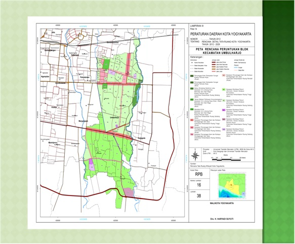

Persebaran Vegetasi Umbulharjo
Dashboard Pemantauan Kerapatan Vegetasi RTH
Peta Persebaran Vegetasi

Rincian Data per Kelurahan
| Kelurahan | Luas RTH (Ha) | Status Kerapatan |
|---|---|---|
| Tahunan | 15.2 | Tinggi |
| Warungboto | 12.8 | Tinggi |
| Pandeyan | 8.4 | Sedang |
| Sorosutan | 18.5 | Tinggi |
| Giwangan | 9.1 | Sedang |
| Semaki | 4.2 | Rendah |
| Muja Muju | 11.0 | Sedang |